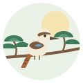

養老 · 澳洲全國
居家照護新制度 Support at Home，要付多少錢？
活動已結束。可向主辦方查詢下期安排。
2025 年 11 月起，政府的居家照護換成 Support at Home：護理類免費，家務等按收入和資產付一部分。
有什麼變化
Support at Home 在 2025 年 11 月開始，取代了原來的 Home Care Packages 和短期恢復照護（Short-term Restorative Care）。
經評估批准後，長期服務分 8 個等級，每個等級有政府資助的預算，裏面含照護管理。另有 3 條短期通道：恢復照護、輔助器具和家居改裝、臨終照護（最後 3 個月）。
能得到的服務包括護理、職業治療、足病、洗澡穿衣，也有清潔、園藝、做飯、購物、接送、喘息和社交活動。
要付多少錢
護理、職業治療、足病這類醫療服務，政府全額付，你不用付。
陪你出門看病、參加活動等“獨立”類服務，你付一部分；清潔、園藝等“日常生活”類，你付得最多。
按官網，從 2026 年 10 月 1 日起，個人照護服務（如洗澡、穿衣）由政府全額資助，不用自己付，前提是評估後的服務計劃裏批了這一項。
付多少取決於收入和資產：領全額養老金的付得最少，沒有長者健康卡（CSHC）的自費退休人士付得最多；不向 Services Australia 提交收入資產資料，會按最高比例收。
2024 年 9 月 12 日或之前已經在用、或已批准 Home Care Package 的人，官網寫明新制度下不會比以前更差。
各家機構自己定價，必須在網上公佈價目表，建議多比較幾家。
只要一點點幫助：CHSP
只需要送餐、清潔、接送等少量幫助，可以走 Commonwealth Home Support Program（CHSP）。要求：65 歲或以上；原住民 50 歲以上；無家可歸或有風險的 50 歲以上。
不論哪一種，都要先經 My Aged Care 評估。怎麼打電話、怎麼找中文口譯，見“在家生活需要幫手，先問誰？”。
中文服務機構（舉例）
康樂大健康（GCAA Health）旗下的 Austa Care 提供居家照護服務，官網列有普通話、粵語等多種語言。
這是編輯方相關的機構，在這裏只作舉例，不代表比別家好。選哪一家，請用上面的“找服務機構”多比較，打電話問清楚價格和服務。